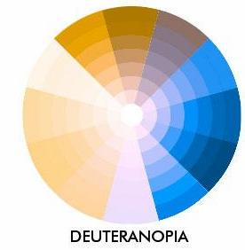

Meu nome é Alan, sou nativo de Corumbá-MS e atualmente moro em Campo
Grande-MS(A capital do estado).
Gosto de programar desde os meus 16
anos após ser inserido no mundo por um projeto escolar que envolvia lógica
de programação
desde então venho me aprofundando no assunto.
Agora
com a Trybe direcionando todo o conhecimento que tenho, com o objetivo
de entrar no mercado.


Flarickpy Mortyp
Projeto que fiz com 17 anos, quando estava estudando lógica de programação em Desenvolvimento de jogos, não está bom mas já é algo.
Projeto feito 100% no Construct 2
Sempre deixo minha marca com um monkka emote


todos emotes tirados de BetterTTV
Sou Daltônico, possuo deuteranopia

Tenho como objetivo ser um programador web igual o Bruno Simon, um desenvolvidor web
francês, extremamente competente.